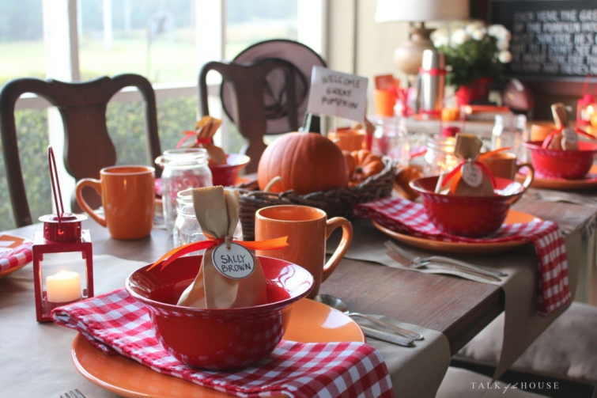
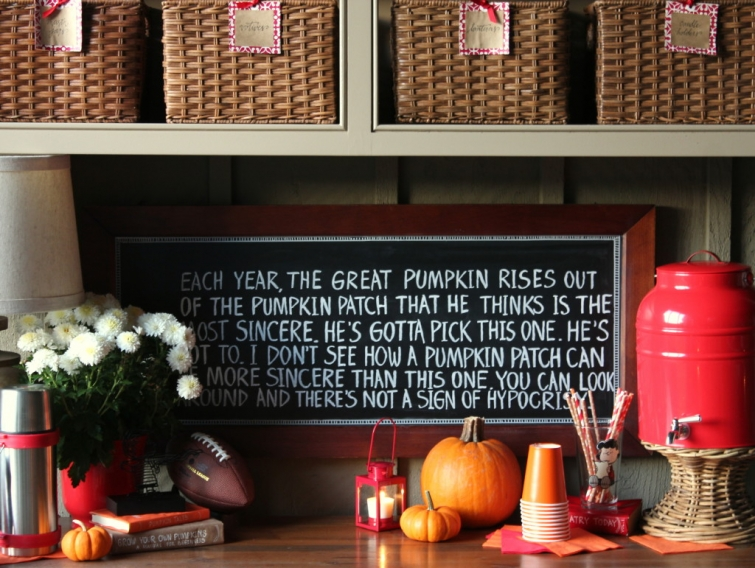

.png)
.PNG)
.PNG)
.PNG)
.PNG)
.PNG)
.JPG)
.JPG)
.PNG)
.PNG)



¬† ¬†I have saved my favorite for last…sort of like dessert. üôÇ ¬†The back porch has been a very fun room to decorate this season – ¬†not just because of the bright cheery color scheme, but also because of the “Halloween decor.”¬†Once I decided It’s The Great Pumpkin, Charlie Brown¬†worked as inspiration for the playroom, I knew it would work out on the porch as well.
I’ve learned when you decorate with a theme, you don’t have to go out and buy a lot of items. ¬†Subtle touches can go a long way. ¬†The only real “theme” purchases I made for this were the Lucy glass and the wire Linus on the buffet table. Lucy came from Hobby Lobby, (on sale!) and Linus came from Hallmark.
.jpg) Everything else was mostly sticking to the color scheme and shopping the house for the rest of the items. ¬†Oh, I did purchase the orange plates and mugs from Dollar Tree….$12 for the service for 6 here. ¬†Not too bad. üôÇ
Everything else was mostly sticking to the color scheme and shopping the house for the rest of the items. ¬†Oh, I did purchase the orange plates and mugs from Dollar Tree….$12 for the service for 6 here. ¬†Not too bad. üôÇ
 Brown paper sacks tied with orange and red ribbon (like in the foyer) are nods to the bags carried by the Peanuts gang in the cartoon. ¬†(There is candy in each bag.) ¬†I just wrote the character names on ring tags for fun. üôÇ ¬†Sally (Charlie Brown’s spunky little sister) sits across from Peppermint Patty.
Brown paper sacks tied with orange and red ribbon (like in the foyer) are nods to the bags carried by the Peanuts gang in the cartoon. ¬†(There is candy in each bag.) ¬†I just wrote the character names on ring tags for fun. üôÇ ¬†Sally (Charlie Brown’s spunky little sister) sits across from Peppermint Patty.
Next to Sally is the boy of her dreams, Linus.
Across from Linus is Schroeder.
(I wish I had thought to look for a small toy piano to go beside his plate.)
Seated next to Linus is Charlie Brown.
(I should have put a rock at his place setting.)
And across from Charlie Brown, with a witch hat hanging on her chair, is Lucy, Linus’ older sister.
Here’s a view of the entire table.
Oh, and don’t forget the World War I flying ace of a dog, Snoopy. üôÇ
In my last post, I included this photo and said there was a hint about the decorating in it.  Did you catch the hint?
Peanuts…the Peanuts gang. ¬†Ha ha! ¬†(Sorry I could not resist that one. üôÇ )
Okay, back to the “serious” decorating…
Pumpkins go a loooong way when you are decorating with orange in the fall.
And we have reached the end of the October-ness in the house.  (I can tell you that November will be toned down quite a bit.)
And no, I am not planning on a Charlie Brown Thanksgiving. üôÇ ¬†But just because we have reached the end of my fall decorating for the month, doesn’t mean we are done for the month. ¬†I have a little more inspiration for you this week. üôÇ ¬†(Hopefully…)
I say “hopefully” because things don’t always go as planned, do they? ¬†You know that “washing down the house” I started this weekend? ¬†Well something (we don’t know what) bit me while I was doing it, and part of my arm and hand started swelling up like the Incredible Hulk. ¬†So our Saturday date night turned into an evening at the after-hours Med Stop complete with sleep inducing Benadryl and an antibiotic. üôÅ ¬†My arm is fine today, but I will wear some long gloves when I resume that activity. ¬†And…our daughter just called and she is sick and headed home to the doctor…sounds like strep to me. üôÅ
But we did get to see Woodlawn last night.  Excellent movie!  Everyone needs to see it.
Here’s to a happy, healthy week as we wrap up this last week before Halloween.
Until next time…


.PNG)
What I would give for that porch!!!!! It has always been a DREAM. Yours is the perfect size and I love how you have it set up and decorated. Love everything.
——————————————————————–
Thank you Pinky. I hope you get your porch one day!
Kelly
I absolutely love your porch, and the Charlie Brown decorating theme for October is the best! Hope you and your family have a Happy Halloween, and may the Great Pumpkin shine upon your lovely home this weekend! üôÇ
———————————————————————
Thank you so much Trisha! I hope you had a fun Halloween yourself. üôÇ
Kelly
I love your Charlie Brown theme! I am always amazed at your wonderful holiday decorations. So creative!!
———————————————————————
Aw you are too sweet Debbie! Thank you, but there are MUCH more creative folks out there – as you will see in the next post. üôÇ
Kelly
Ooh bad luck with the bite Kelly … that always happens to me too, can’t seem to avoid being nibbled no matter what preventative action I take!! Hope the swellings going down and your feeling ok.
Your porch looks wonderful! Classy and homely … if that makes sense üôÇ if I lived nearer I could call by with a coffee for us … Pumpkin latte maybe?? I’d just love to sit on your swing seat on the porch!! Hope that doesn’t sound too stalkerish!!
Rosemary
———————————————————————
Yes, bad luck for sure. Arm is doing fine now…but I hate taking antibiotics.
Thank you for the compliments on the porch. Pumpkin lattes out on the porch would be great! It has been dark and dreary rainy so something warm to drink out there would be quite cozy. üôÇ (No that does not sound stalkerish.)
Kelly
I forgot to say I fell in love with your napkins I love the trim on them. So special. üôÇ
———————————————————————
I love that trim on the napkins too! They came from Pier 1 if you would like to find them.
Kelly
Kelly, Everything you do is so pretty and so creative. I love your Peanuts theme so very much and you did it in such a classy way that it wasn’t too childish, but still had the childlike spirit. I am so sorry you got bit. Ouch. That kind of stuff always happens to me too. THEY FIND ME!!! My hubby always says it is because I am so sweet. I bet that’s why it bit you too;)
——————————————————————–
Thank you Charissa. Halloween is a holiday that calls for being a kid at heart…which is why the Peanuts theme works well.
I think whatever bit me was mad I was washing his home off the side of our house! I took down spider webs and wasp nests and goodness knows what all else! I am also a mosquito magnet. It does seem that some of us attract insects more than others. We must taste better to them. üôÇ
Kelly
Kelly – this is awesome. I am a huge Peanuts fan. Can’t wait for the movie next week. I am going to have to try some of your ideas. üôÇ
———————————————————————
If you are a Peanuts fan, then this is your party decor! I’m glad you liked it Lynn. I am so excited for the movie too!
Kelly
I love the SNOOPY dog treat! It’s so cute! Happy trick or treat!
——————————————————————–
I thought the Snoopy dog treat was so fun! Happy trick or treat to you too. üôÇ
Kelly
Your porch is my favorite! And I’m sure the Great Pumpkin will pick your pumpkin patch! How do you get your print so perfect on that charming chalk board?
Oh my gracious! So very sorry for the bite. Be careful out there. The wasps have been crazy here and slowed down my window washing marathon.
I hope your daughter doesn’t have strep. This time of year is no fun to be missy beautiful fall days not feeling good. Hoping you are all the road to recovery. Happy trick or treat!
——————————————————————-
Thanks Peggy! The writing is not that straight. I just eyeball it. So sorry for the wasps with your window washing! The weather here has slowed mine down. Doctor said daughter’s sickness is a severe sinus infection – not strep – and loaded her up with 5 medications. That ought to get anyone well!
Kelly
Kelly,
What a great attention to detail. I love every detail.
I’m so sorry you got bitten by something. That happens to me occasionally…the weird thing is I never know what it is that bit me.
Good to know about the movie.
xo,
Karen
———————————————————————-
It is the details that are so fun to create. Isn’t it crazy when you don’t even know what got you? I never felt a sting…just severe crazy itching!
Kelly
Love the porch! So festive! Sorry to hear about that bite…probably a spider I’m guessing. Stay well…hope your daughter feels better! üòâ
——————————————————————–
Thanks Donnamae! It was a fun “room” to decorate. I never saw an insect, but a spider is my guess as well. Daughter should be on the way to recovery with all the meds they gave her.
Kelly
Love it all! So fun with the Peanuts theme. Snoopy bowl adorable! We hope to see Woodlawn soon. Tried over the weekend, but we couldn’t fit it in. It looks like a great movie. I love any football movie with a great message. Take care and watch out for bugs that want to bite you! Ha! Patty
——————————————————————–
It was a fun theme to pull off. Glad you liked it Patty! I hope you get to see Woodlawn. It is REALLY good.
Yes, I am watching out for bugs….not fun to get bitten!
Kelly
Kelly, Peanuts….you are too funny! Love Charlie Brown. You have the best ideas.
———————————————————————
Thank you Tricia! I like a little humor with my decorating. üôÇ
Kelly
So cute! Just love it!
—————————————————————–
Thanks Jo Anne! It was a fun one to do. üôÇ
Kelly
So cute and love it all. Your porch is my favorite, too.
———————————————————————
Thanks Kim! Your sunroom is MY favorite. üôÇ
Kelly
I love it Kelly! Your porch has always been a favorite of mine, and I like how the theme and colors inside look just as good outside. The cute checked napkins look just like something Lucy would have picked for a fall picnic. What a lucky girl you are to find such a deal on orange plates. Everything is a treat for the eyes! And Kelly the chalk wizard worked her magic on that board again! Rather bewitching, I’d say!
Sherry
———————————————————————–
The chalk wizard here likes that Peanuts font. It is much easier to do than my normal crazy cursive one! So glad you liked the porch. I love being able to do the little subtle details (makes my brain work! LOL)
I looked all last year for reasonably priced orange plates and had no luck anywhere. I could not believe they had these at the dollar store! I should have bought lots more than 6 because I know we can put them to good use!
Kelly
Kelly,
Your porch is my second favorite room “in” your home. I love the peanuts theme continued. My favorite is the Snoopy dog bowl. I have a huge bowl of water on our porch for our boxer and he loves to drink the “outside” water. I keep dog biscuits by the front door on Halloween for any neighborhood doggies that some trick or treating and we usually have 3 or so. I hope you and your daughter get better asap. Good luck. Take care and thanks for sharing.
Dawn
———————————————————————–
Dawn that is so smart of you to have treats for the dogs! Who would have thought?! I love it! I see all the dog costumes in the store for Halloween, but no one shows up here with their dog. How cute!
My daughter and I are both doing better. Thank you for the well wishes!
Kelly
Kelly, I do believe that we are all just in love with your home! Love how you carried the Peanuts theme throughout the house, but not too syrupy sweet – just right and fun! I could sit and swing on your porch in that beautiful dappled sunlight forever – especially in October! I just love those little red lanterns. I’ve seen the large ones but not the smaller size.
Feel better from that bite and enjoy this last week in October!
————————————————————————
Oh you are too sweet Mari. üôÇ The porch is a nice place to be when the sun is shining, or on days like today…dark and dreary with drizzling rain…very cozy out there.
I like those little red lanterns too. I got them at Michaels years ago. I am thinking they were part of a Valentine’s line – not sure. Red works for a lot of holidays (even Halloween. üôÇ )
Kelly
I LOVE your porch…how cute and clever. You…girl…think of everything. Sorry to hear you got bit, I did too on Friday at the Country Living Fair. Just as we were leaving I felt something on my finger and tried to swipe it away (because I was looking at my sister in-law while she was talking to me) and it stung me…a bee. It actually attached itself to my finger and I had to pick it off. Since Saturday it has been itching me like crazy.
———————————————————————-
Thank you Cheri! No I’m afraid I don’t think of everything. I didn’t even think about the toy piano for Schroeder until I was writing this post. üôÇ Ouch on YOUR bite! A bee sting…YIKES! What a terrible thing to happen at such a fun place. I know all about crazy itching. NOT fun. Take some Benadryl…and then take a nap.
Kelly
I just love this! Peanuts is a classic theme that can be enjoyed by young and old. üôÇ I am really liking the orange and red combination too. Your porch has always been my favorite around the blogosphere. üôÇ Sorry about your insect bite. That is kinda scary considering you couldn’t identify what bit you. :/ Sorry about your daughter as well. Hope both of you get well soon! Woodlawn is on my list. üòâ You know, with the other movies I “plan” to see but never do until they come out on dvd. üòõ
————————————————————————-
Thank you Gina! The orange and red really works for Halloween (surprisingly!) November will be really bland compared to all of this.
The not knowing what bit me was what was scary.I am on an antibiotic just in case it was something really bad. Daughter is on 5 meds now, so she should be feeling much better soon.
I hope you get to see Woodlawn..whether it is at the movies or in your home. It really is a good movie with a great message.
Kelly
How cute and fun is this. I love it all. You are so clever.
——————————————————————
Thanks Marty! It was very fun to put together out there!
Kelly
Love the porch! I’ll bet it has been wonderful sitting out there with all of the pumpkin finery! So sorry about your arm! Glad that you are better. What we go thru for our houses! XOXO
———————————————————————
I’m so glad you like it Anne! It is nice to sit out there…and I even cleaned out the cabinet and all the storage space under the table. So that makes it even nicer for me. üôÇ
Yes, what we go through for our houses!
Kelly
Your blog has become the ONLY one that I make time to read. I love that your house isn’t a megahouse, just a realistic and beautiful family home. I love that you always make everything just a little bit special for your family and us! I have stopped reading the blogs that are paint the kitchen cabinets every week and are totally unrealistic. Thanks for such a fun read.
———————————————————————-
Wow Lynelle! What a super compliment! No, we are definitely not living in a megahouse – although I do want to downsize some now that all our children have moved out. I used to paint our cabinets occasionally years ago but realized that white works well for anything. Now I don’t have the time or energy to do that…and it is not needed (the Magic Eraser for wiping off the doors and drawers is what is needed now. LOL) Now it is just decorate with mostly what we have in the house (and attic. üôÇ )
Thank you for reading and for sharing your very kind comment. Enjoy your week!
Kelly
Oh my word so cute. Love the table with the butcher paper and dishes.
———————————————————————
Thank you Linda! Those dishes from the dollar store were a steal! (I wish I had bought more of them.)
Kelly
I love your Peanuts theme for October. It is just right and goes great with the red and orange. Could you please tell me how large your screened in porch is? I just love it and someday I want to have one just that size!
———————————————————————–
There is a lot of nostalgia associated with the Peanuts characters, so I think it appeals to many people. I had originally thought about going with a yellow and black color scheme (like Charlie Brown’s shirt) but it just didn’t work as well. I am glad you liked how it all turned out Lynne.
I went out and measured the porch, and with my rough measurements it appears to be about 12’9″ x 27′. It could stand to be a little deeper but works fine as it is. Hope you get the porch you want. üôÇ
Kelly
Hey, how cool was it for me to see my name in print. That was a first. But, what can I say? Always love what you do, Kelly. Your screened-in porch and your office are my favorite rooms regardless the season. And, your trademark red notes are so smart! So sorry for the critter bite and to hear of your daughter’s illness. Love that she is coming Home for some TLC.
———————————————————————-
Yes, your name was here Julie! Thank you for your good question, your comments, and your compliments. üôÇ After our daughter went to the doctor and picked up her meds, she slept and slept and slept. She did not even hear me leave to run some errands. I had to wake her up when I returned! But sleep helps you get well, so I know with sleep and meds she will be feeling better soon.
Kelly
Kelly,
You just amaze me. I love how you used red and orange and the Peanuts gang. I am always so inspired by your posts. Although I don’t think I could ever get my house to match and pull it off like you do. Simply Beautiful Kelly!
———————————————————————-
Aw thanks Donna! I am so glad you can find inspiration here. I hope you are having a great week. Ours is dark and dreary! (Maybe that is how Halloween is supposed to be. LOL)
Kelly
It’s all so adorable!
——————————————————————–
Thank you Cristina! And thank you SO much for sharing the post on your Facebook page. üôÇ
Kelly
Thank you for such a creative and fun seasonal theme. I always enjoy everything you share.
———————————————————————
I am so happy that you liked it Nancy. Thank you for reading the post. I always enjoy your comments! üôÇ
Kelly
How cute is that. Where do you find the time to do this? And you have that knack for knowing how to put things together to create such a neat home (and I know you enjoy doing it). Awesome, Awesome!!
——————————————————————–
I’m retired, so time comes much more freely to me now than it did last year. (I don’t know how I even had time to work before!) I do enjoy decorating (and organizing.) Thank you for your kind comment on the porch. I’m happy you liked it Kaye Ann!
Kelly
That is just the cutest theme! I have always loved the Peanuts characters. You did such an awesome job and really made me smile!
Shelley
———————————————————————
Well I am glad I could give you a smile Shelley! Thank you for leaving such a sweet comment. üôÇ And I’m glad you like how the porch turned out. üôÇ
Kelly
Simple and sweet. Love…Love your porch, but not that I haven’t told you that over and over..sigh! Watching Charlie Brown has been a tradition here. I was playing the Christmas CD always in the morning last year quite a bit. Yes, I am a big kid at heart! Sorry about your arm and your daughter being sick. I had a bit of a sore throat a couple of weeks back. Ugh.. all kinds of bugs already starting the cold seasons off… P. S. I might have to stop off at a Dollar store or two today…Love your orange and “Kelly” signature red!
——————————————————————-
Thanks Debra! I have had the dvd of the Halloween special playing here for a couple of weeks, and in between the programs on it, the great jazzy music plays over and over again (much to my husband’s annoyance after a while!) I just can’t resist!
Hope you are over your sore throat. Fingers crossed that now that I am not working at an elementary school, perhaps I will be less likely to come down with that kind of thing this year. (Of course, I can always catch it from my daughter. üôÅ )
Kelly
p.s. Hope you have good luck with finding the orange dishes! Ours were at Dollar Tree.
Again…you are the BEST at sticking with a theme and doing it on a budget. AND The Great Pumpkin brings back some wonderful childhood memories for me.
Tickled that you saw Woodlawn. Such a powerful movie with a message that all America needs. AND my husband actually played baseball against Tony Nathan and basketball against Jeff Rutledge; and he was a the big game that night at Legion Field. FINALLY something for all the world to see that good things DO happen in Birmingham.
Scary bug bite you got. Take care and be careful.
————————————————————————
Goodness thank you Becky! I think we all hold The Great Pumpkin in a special place in our memory. üôÇ
How amazing is that for your husband!!! Yes YES that is a very good thing for the world to see about Birmingham! I so hope everyone goes to see such a fine movie. The next one I want to see is Pan….quite a contrast to Woodlawn. LOL
I will be very careful when I resume house washing. I only got half of it finished before the Incredible Hulk arm set in.
Kelly
PEANUTS! I saw them but didn’t ring a bell you were going in that direction!! How great! ( Pumpkin!) üòâ loved it sooo much!! What a GREAT PUMPKIN way to start this BOOtiful week of fall fun!! I’m inspired!! Maybe you will need to stay away from the outside work– since you are allergic to it?! I got stung 3 times ( yellow jackets and a scorpion) so I am an inside/screened porch kinda gal now!! Sorry baby girl isn’t feeling well— but getting home for some TLC from mom and dad will do wonders!! And to get to sleep in her own room — should do the TRICK and get all those TREATS!! üòâ I need to go— before I get carried away!! I’m off to decorate my mailbox, gate, and entry way— a little late but will keep it up until after Thanksgiving. Thanks, Kelly for all the inspiration!!
——————————————————————-
Man, I figured you of all people would get the hint, Louvina! You are usually very good at that. Glad you could find inspiration in the post.
Yes, I am allergic to working outside (Ha!) but my husband simply cannot do it all alone…waaaaaay too much work for one person.
Daughter slept soundly on the sofa for a very long time yesterday. No sleep from the night before and 5 meds from the doctor’s visit will do that to you!
I am SO very glad you are getting your fall decorating going!! It will be perfect for Thanksgiving I know. üôÇ
Take care of yourself.
Kelly
I love the Peanuts theme, since I have always been a Snoopy fan. I am huge space history fan, and Snoopy has lots of ties to that. I always love to see how creative you are with things in your home, and I loved your August porch with the tomato plates, but this one may top it for me. Great job! Hope all feel better soon.
———————————————————————-
Yes, Charlie Brown, Snoopy, and Apollo X…all together, and now I think all of them are in a museum together, if I am not mistaken. Thank you for the comment on the porch – in all its various styles. I’m so glad you like that “room” Sandy!
And thank you for the well wishes for both me and my daughter.
Kelly
I love Talk of the House !
——————————————————————-
I’m so glad you do Karen! Thank you for reading!
Kelly
So sorry you got bit! Those mean old bugs love to nibble on Southern Belles!
This Peanuts theme is so precious! I would have to sit at Lucy’s spot because I was always the bossy big sister to my little brother, who was very much like Linus! I’ll even bring my Beagle to share Snoopy’s treats!
Can’t wait for the Peanuts movie as well as Woodlawn.
——————————————————————–
You and your Snoopy dog are welcome to come on over to the party! And yes, you may have Lucy’s seat if you insist. I might have to fight you for it though because I was a bossy big sister as well. (Although my little brother was bigger than me!)
You do need to see Woodlawn – especially as a resident of Alabama. I’m excited about the Peanuts movie!
Kelly
Adorable!
——————————————————————–
Thank you Talia!
Kelly